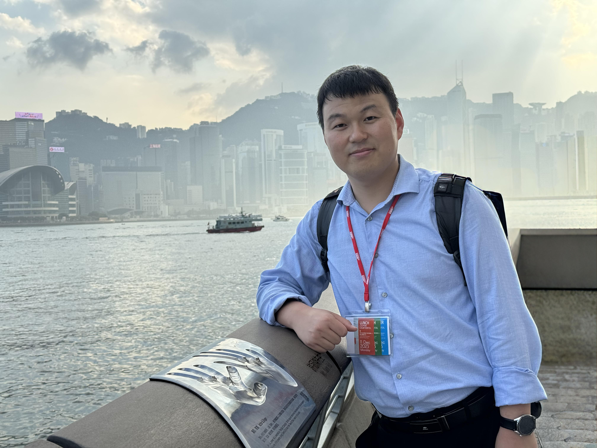

蔺庆海
Qinghai Lin · 工学博士 · 副教授 · 硕士生导师
蔺庆海，1993年7月，工学博士，山东交通学院副教授、硕士生导师、智慧交通系副主任，入选山东省青年科技人才托举工程。
近年来主要从事智能交通系统、交通控制与仿真、智能网联与车路协同、交通大数据分析与应用等领域研究。主持国家自然科学基金项目1项、山东省自然科学基金项目1项；主研参与国家自然科学基金项目2项、山东省自然科学基金创新发展联合基金项目1项；主持/参与政府或企业委托横向项目10余项。以第一/通讯作者发表SCI/EI论文10余篇，其中包含IEEE T-ITS和中国公路学报等交通领域顶级期刊；授权国家发明专利5件。
研究方向：智能交通系统，交通控制与仿真，智能网联与车路协同，交通大数据分析，陆空协同感知与控制
主讲课程：本科生：交通工程学、交通大数据导论、数据分析理论与实践；研究生：交通流理论

新闻动态
- 2026.07获第26届海外华人交通协会国际交通科技年会（COTA CICTP）最佳编辑奖
- 2025.12入选2026年度山东省青年科技人才托举工程
- 2025.11晋升为山东交通学院交通与物流工程学院副教授
- 2025.03任山东交通学院交通与物流工程学院学术副教授
- 2024.03任山东交通学院交通与物流工程学院讲师
- 2023.11博士毕业于中山大学，获工学博士学位
教育经历
- 中山大学 · 计算机科学与技术（智能交通工程）专业 · 博士 2019.09 - 2023.12
- University of Nevada, Reno · Civil and Environmental Engineering · 访学 2017.12 - 2018.03
- 重庆交通大学 · 交通运输工程专业 · 硕士 2016.09 - 2019.06
- 山东交通学院 · 交通工程专业 · 学士 2012.09 - 2016.06
工作经历
- 山东交通学院 · 交通与物流工程学院 · 副教授 2025.12 - 至今
- 山东交通学院 · 交通与物流工程学院 · 学术副教授 2025.04 - 2025.12
- 山东交通学院 · 交通与物流工程学院 · 讲师 2024.04 - 2025.04